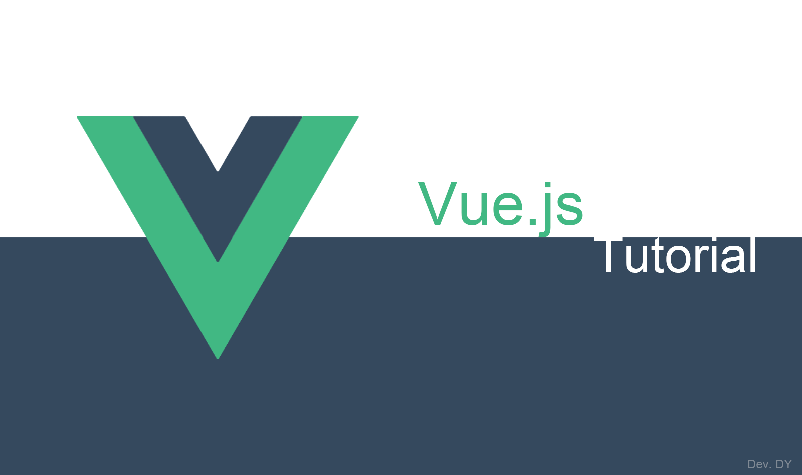

빠르게 배우는 Vue.js

포스팅을 시작하기전에 이번 포스팅에는 개인적인 느낌과 방향성을 매우 많이 포함시켰다. 이점 참고하기 바란다.
한창 상승 중인 Front-End를 위한 JavaScript Framework인 Vue.js를 시작하기 앞서 먼저 Vue.js에 대해 알아보고 개념을 잡고 시작하자.
이번 프로젝트를 위해 2시간의 세미나를 걸쳐 Vue.js 약(?)을 팔았다. 다행히 결과가 좋아 기존에 Survey 된 프레임워크인 Backbone.js를 Vue.js로 변경하기로 하였다. 물론 Backbone.js가 Vue.js보다 못하다는 말이 아니다. 앞으로 진행되어야 할 프로젝트에서 컴포넌트 방식의 개발 요소가 매우 필요하였고, 이러한 구성을 Backbone.js로 프로토타입을 구현하니 막상 복잡함 감이 없지 않았다. 이에 따라 다른 기술을 survey하다 Vue.js를 채택하게 되었다. 한창 상승 중인 프레임워크인지라 물론 여러 번 지나가다 보기만 하였지만 이번에 제대로 접근해 보니 매우 진보적이고 훌륭한 프레임워크라고 생각이 들어 포스팅하게 되었다.
그럼 먼저 Vue.js에 대해 기본적인 개념부터 알아보고 다음 포스팅부터 실제로 만져 보면서 학습해보자.
Vue.js
Vue.js 공식 사이트에 접속해 보면 첫 페이지에 딱 3글자로 요약을 해 놓았다.
단어만 보아도 대강 유추는 가능하다. JavaScript 프레임워크로 HTML, CSS, JavaScript를 알고 있다면 가이드를 통해 충분히 빠른 시간내에 습득이 가능하며, 작은 용량으로 빠른 Virtual DOM을 제공한다. 다른 의미로 Vue.js를 본다면 다음과 같을 것이다.
추이
JavaScript Web Front-End Framework는 무수히 많다. 그중 가장 활성화되어 있고 많이 사용하는 대표적인 프레임워크에는 Angular.js와 React.js가 있다. 이 두 프레임워크에 비한다면 Vue.js는 아직 갈길이 멀다. 하지만 전체적으로 본다면 그렇지만 최근의 기록을 본다면 Vue.js가 곧 Angular.js와 React.js 앞지를 가능성이 보인다는 것을 알 수 있다.
또한, Most Popular Projects in 2016에서 확인해 보면 2016년도에 Github에서 star를 받은 수가 월등히 Vue.js가 높다는 것을 알 수 있을만큼 상승 중에 있다.(해당 내용은 VELOPERT.LOG의 포스트를 참조하였습니다.)
사용성
어느 프로젝트이든 또는 어떤 제품이든 그 결과적인 솔루션이 어떤 프레임워크를 사용하였는지는 알기 어렵다. 물론 해당 담당자나 개발자가 공표하지 않는다는 조건에서 말이다. 그래서 우리는 현재 널리 분포되어있는 웹 중 얼마나 Vue.js가 적용되었는지는 수치상 알 수 없지만 다른 방법으로 유추가 가능하다. 이에 대한 답을 먼저 보고 가자.
우리는 StackOverflow 에 등록된 질문 수와 NPM의 다운로드 수 그리고 Vue.js의 github에 올라와 있는 이슈의 수를 통해 얼마나 활성화가 되어 있는지 감을 잡을 수 있다. 이런 내용을 포스팅에 추가한 이유는 아무래도 Vue.js의 도입을 망설이는 개발자 또는 담당자 또는 기획자가 있을 수 있기 때문이다. 아무리 상승 중인 프레임워크라고는 하나 이에 대한 정보가 부족하다면 우리는 개발을 하면서 큰 난관에 자주 봉착 될 것이다. 그렇기에 이렇게 대강이나마 도움이 되었으면 하는 바램으로 수치상의 데이터를 남겨본다.
또한 눈치가 빠른 사람이라면 알 수 있을 것이다. github에 등록된 이슈의 수에 대해 말이다. NPMCompare에서 Angular와 React를 본다면 각각 등록된 이슈의 수는 약 700건과 400건이다. 이에 비해 Vue.js는 약 80건 밖에 되지 않는다. 직관적으로 본다면 그만큼 Vue.js의 사용자가 Angular.js나 React.js보다 매우 적다라는 것으로 볼 수 있지만 또 다른 관점으로 본다면 등록된 이슈의 건수가 낮은 Vue.js는 그만큼 안정적이란 말이 될 수 있다.
개인적으로 생각해보건데 프레임워크의 개발 규모 관점에 보았을 때 Angular.js나 React의 경우 각각 Google과 Facebook이라는 매우 규모가 큰 타이틀이 붙는 반면 Vue.js는 Evan You라는 단일 개발자가 개발이 되었다. 규모의 차이가 매우 크지만 전혀 Vue.js가 밀리지 않는다고 생각된다.
특징
Vue.js의 특징을 몇가지 꼽아 보자면 다음과 같을 수 있다.
Vue.js를 대강 아는 사람들이고 들어본 사람들은 이렇게도 들어보았을 것이다. angular + react = vue. 맞는 말이기는 하다. angular의 지시자(Directive)가 있을 뿐더라 react와 같이 Virtual DOM을 제공한다.
그렇다면 이렇게 장점만 합쳐 놓았다면 다른 프레임워크와 다른점이 무엇인가?
그것은 해당 공식 사이트에서 확인 할 수 있다. Vue.js 개발 팀은 편견을 버리고 객관적으로 Vue.js와 Angular.js, React.js 그리고 Ember.js와 같은 여러 프레임워크를 비교해 놓았다. 해당 내용은 다른 프레임워크와의 비교에서 확인 할 수 있다.
무엇인가 Vue.js에 대해 설명 포스팅을 하자고 생각했을 때는 거창하게 글을 써보려하였지만 막상 그렇게 하려니 마음대로 되지 않는다. 글을 아무리 설명을 해도 실제로 피부로는 와 닿지 않기 때문이다. 그래서 해당 Vue.js의 소개 포스팅은 짧게 가보고 이어지는 Tutorial을 길게 가볼 생각이다.
현재 Vue.js를 사내에 도입하여 앞으로 진행된 차기 제품(프로젝트라고 하기 보다 Vendor사이기에..)의 UI는 Vue.js로 가기로 하였고 기존에 jQuery와 Backbone으로 만들어 놓은 여러 Component를 Vue.js로 Converting 하고 있는데 훌륭하다. 훌륭하다. 매우 훌륭하다라고 자꾸 느껴지는 Vue.js이다. 오래만에 개발을 하면서 설레이고 흥분되는 느낌을 받는다.